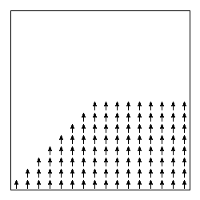
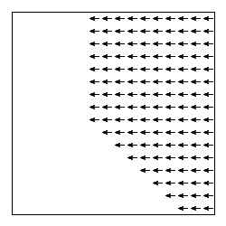

Field objects return values (either scalar or vector) as a function of position. These are frequently used as embedded objects inside Specify blocks of other Oxs_Ext objects to initialize spatially varying quantities, such as material parameters or initial magnetization spin configurations. Units on the returned values will be dependent upon the context in which they are used.
Scalar field objects are documented first. Vector field objects are considered farther below.
Returns the same constant value regardless of the import position. The Specify block takes one parameter, value, which is the returned constant value. This class is frequently embedded inline to specify homogeneous material parameters. For example, inside a driver Specify block we may have
Specify Oxs_TimeDriver {
...
Ms { Oxs_UniformScalarField {
value 8e5
}}
...
}
As discussed in the MIF 2 documentation (Sec. 17.3.3, page 17.3.3), when embedding Oxs_UniformScalarField or Oxs_UniformVectorField objects, a notational shorthand is allowed that lists only the value. The previous example is exactly equivalent to
Specify Oxs_TimeDriver {
...
Ms 8e5
...
}
where an implicit Oxs_UniformScalarField object is created with value set to 8e5.
Examples: sample.mif, cgtest.mif.
Declares values that are defined across individual regions of an Oxs_Atlas. The Specify block looks like
Specify Oxs_AtlasScalarField:value {
atlas atlas_spec
multiplier mult
default_value scalar_field_spec
values {
region1_label scalar_field_spec1
region2_label scalar_field_spec2
…
}
}
The specified atlas is used to map cell locations to regions; the value at the cell location of the scalar field from the corresponding values sub-block is assigned to that cell. The default_value entry is optional; if specified, and if a cell’s region is not included in the values sub-block, then the default_value scalar field is used. If default_value is not specified, then missing regions will raise an error.
The scalar field entries may specify any of the scalar field types described in this (Field Objects) section. As usual, one may provide a single numeric value in any of the scalar_field_spec positions; this will be interpreted as requesting a uniform (spatially homogeneous) field with the indicated value.
If the optional multiplier value is provided, then each field value is scaled (multiplied) by the value mult.
The vector field analogue to this class is Oxs_AtlasVectorField, which is described below in the vector fields portion of this section.
Examples: diskarray.mif, ellipsoid.mif, grill.mif, spinvalve.mif, tclshapes.mif.
Returns a value that varies linearly with position. The Specify block has the form:
Specify Oxs_LinearScalarField:name {
norm value
vector { }
offset off
}
If optional value norm is specified, then the given vector is first scaled to the requested size. The offset entry is optional, with default value 0. For any given point , the scalar value returned by this object will be .
Example: spinvalve-af.mif.
Defines a scalar field that varies spatially in a random fashion. The Specify block has the form:
Specify Oxs_RandomScalarField:name {
range_min minvalue
range_max maxvalue
cache_grid mesh_spec
}
The value at each position is drawn uniformly from the range declared by the two required parameters, range_min and range_max. There is also an optional parameter, cache_grid, which takes a mesh specification that describes the grid used for spatial discretization. If cache_grid is not specified, then each call to Oxs_RandomScalarField generates a different field. If you want to use the same random scalar field in two places (as a base for setting, say anisotropy coefficients and saturation magnetization), then specify cache_grid with the appropriate (usually the base problem) mesh.
Examples: randomshape.mif, stdprob1.mif.
Analogous to the parallel Oxs_ScriptVectorField class, this class produces a scalar field dependent on a Tcl script and optionally other scalar and vector fields. The Specify block has the form
Specify Oxs_ScriptScalarField:name {
script Tcl_script
script_args { args_request }
scalar_fields { scalar_field_spec …}
vector_fields { vector_field_spec …}
atlas atlas_spec
xrange { xmin xmax }
yrange { ymin ymax }
zrange { zmin zmax }
}
For each point of interest, the specified script is called with the arguments requested by script_args appended to the command, as explained in the User Defined Support Procedures of the MIF 2 file format documentation. The value for script_args should be a subset of {rawpt relpt minpt maxpt span scalars vectors}.
If rawpt is requested, then when the Tcl proc is called, at the corresponding spot in the argument list the x, y, z values of point will be placed, in problem coordinates (in meters). The points so passed will usually be node points in the simulation discretization (the mesh), but this does not have to be the case in general. The relpt, minpt, maxpt, and span rely on a definition of a bounding box, which is an axes parallel parallelepiped. The bounding box must be specified by either referencing an atlas, or by explicitly stating the range via the three entries xrange, yrange, zrange (in meters). The minpt and maxpt arguments list the minimum and maximum values of the bounding box (coordinate by coordinate), while span provides the 3-vector resulting from . The relpt selection provides x_rel, y_rel, z_rel, where each element lies in the range , indicating a relative position between minpt and maxpt, coordinate-wise.
Each of the script_args discussed so far places exactly 3 arguments onto the Tcl proc argument list. The last two, scalars and vectors, place arguments depending on the size of the scalar_fields and vector_fields lists. The scalar_fields value is a list of other scalar field objects. Each scalar field is evaluated at the point in question, and the resulting scalar value is placed on the Tcl proc argument list, in order. The vector_fields option works similarly, except each vector field generates three points for the Tcl proc argument list, since the output from vector field objects is a three vector. Although the use of these entries appears complicated, this is a quite powerful facility that allows nearly unlimited control for the modification and combination of other field objects. Both scalar_fields and vector_fields entries are optional.
If script_args is not specified, the default value relpt is used.
Note that if script_args includes relpt, minpt, maxpt, or span, then a bounding box must be specified, as discussed above. The following example uses the explicit range method. See the Oxs_ScriptVectorField documentation (page 7.3.6) for an example using an atlas specification.
proc Ellipsoid { xrel yrel zrel } {
set xrad [expr {$xrel - 0.5}]
set yrad [expr {$yrel - 0.5}]
set zrad [expr {$zrel - 0.5}]
set test [expr {$xrad*$xrad+$yrad*$yrad+$zrad*$zrad}]
if {$test>0.25} {return 0}
return 8.6e5
}
Specify Oxs_ScriptScalarField {
script Ellipsoid
xrange { 0 1e-6 }
yrange { 0 250e-9 }
zrange { 0 50e-9 }
}
This Oxs_ScriptScalarField object returns if the import (x,y,z) lies within the ellipsoid inscribed inside the axes parallel parallelepiped defined by (xmin=0, ymin=0, zmin=0) and (xmax=1e-6, ymax=250e-9, zmax=50e-9), and 0 otherwise. See also the discussion of the ReadFile MIF extension command in Sec. 17.3.2 for an example using an imported image file for similar purposes.
Below is one more example, illustrating the use of the vector_fields option.
proc DotProduct { x1 y1 z1 x2 y2 z2 } {
return [expr {$x1*$x2+$y1*$y2+$z1*$z2}]
}
Specify Oxs_FileVectorField:file1 {
atlas :atlas
file file1.omf
}
Specify Oxs_UniformVectorField:dir111 {
norm 1
vector {1 1 1}
}
Specify Oxs_ScriptScalarField:project {
script DotProduct
script_args vectors
vector_fields {:file1 :dir111}
}
The scalar field :project yields at each point in space the projection of the vector field :file1 onto the [1,1,1] direction.
Examples: antidots-filled.mif, ellipsoid-fieldproc.mif, manyregions-scriptfields.mif, manyspheres.mif, varalpha.mif.
The Oxs_VecMagScalarField class produces a scalar field from a vector field by taking the norm of the vector field on a point-by-point basis, i.e.,
The Specify block has the form:
Specify Oxs_VecMagScalarField:name {
field vector_field_spec
multiplier mult
offset off
}
The multiplier and offset entries are applied after the vector norm, i.e., the resulting scalar field is . The default values for mult and off are 1 and 0, respectively.
The functionality of the Oxs_VecMagScalarField class may be achieved with the Oxs_ScriptScalarField class by using the vector_fields option and a Tcl script to compute the vector norm. However, this particular functionality is needed frequently enough that a specialized class is useful. For example, this class can be used in conjunction with a vector field object to set both the saturation magnetization distribution () and the initial magnetization:
Specify Oxs_FileVectorField:file1 {
atlas :atlas
file file1.omf
}
Specify Oxs_TimeDriver {
basename test
evolver :evolve
stopping_dm_dt 0.01
mesh :mesh
m0 :file1
Ms { Oxs_VecMagScalarField {
field :file1
}}
}
Example: sample-vecrotate.mif.
Scalar fields provide scalar values as a function of position across three-space. The Oxs_ScriptOrientScalarField class is used to compose a transformation on the input position before evaluation by a scalar field. The Specify block has the form:
Specify Oxs_ScriptOrientScalarField:name {
field scalar_field_spec
script Tcl_script
script_args { args_request }
atlas atlas_spec
xrange { xmin xmax }
yrange { ymin ymax }
zrange { zmin zmax }
}
The field argument should refer to a scalar field object. The script is a Tcl script that should return a position vector that will be sent on the field object to ultimately produce a scalar value. The arguments to the Tcl_script are determined by script_args, which should be a subset of {relpt rawpt minpt maxpt span}. If any arguments other than rawpt are requested, then the bounding box must be specified by either the atlas option, or else through the three xrange, yrange, zrange entries. The default value for script_args is relpt.
The Oxs_ScriptOrientScalarField class can be used to change the “orientation” of a scalar field, as in the following simple example, which reflects the :file1mag scalar field across the yz-plane:
Specify Oxs_FileVectorField:file1 {
atlas :atlas
file file1.omf
}
Specify Oxs_VecMagScalarField:file1mag {
field :file1
}
proc Reflect { x y z xmin ymin zmin xmax ymax zmax} {
return [list [expr {($xmax+$xmin-$x)}] $y $z]
}
Specify Oxs_ScriptOrientScalarField:reflect {
field :file1mag
script Reflect
script_args {rawpt minpt maxpt}
atlas :atlas
}
See also the Oxs_ScriptOrientVectorField class (page 7.3.6) for analogous operations on vector fields.
Example: sample-reflect.mif.
The Oxs_AffineOrientScalarField class is similar to the Oxs_ScriptOrientScalarField class, except that the transformation on the import position is by an affine transformation defined in terms of a matrix and an offset instead of a Tcl script. Although this functionality can be obtained by an appropriate Tcl script, the Oxs_AffineOrientScalarField is easier to use and will run faster, as the underlying transformation is performed by compiled C++ instead of Tcl script.
The Specify block has the form:
Specify Oxs_AffineOrientScalarField:name {
field scalar_field_spec
M { matrix_entries …}
offset { off off off }
inverse invert_flag
inverse_slack slack
}
If represents the scalar field specified by the field value, then the resulting transformed scalar field is . Here M is a matrix, which may be specified by a list of 1, 3, 6 or 9 entries. If the matrix_entries list consists of a single value, then is taken to be that value times the identity matrix, i.e., is a homogeneous scaling transformation. If matrix_entries consists of 3 values, then is taken to be the diagonal matrix with those three values along the diagonal. If matrix_entries is 6 elements long, then is assumed to be a symmetric matrix, where the 6 elements specified correspond to , , , , , and . Finally, if matrix_entries is 9 elements long, then the elements specify the entire matrix, in the order , , , , …, . If is not specified, then it is taken to be the identity matrix.
The offset entry is simply a 3-vector that is added to . If offset is not specified, then it is set to the zero vector.
It is frequently the case that the transformation that one wants to apply is not , but rather the inverse, i.e., . Provided is nonsingular, this can be accomplished by setting the inverse option to 1. In this case the matrix is compared to the identity matrix, to check the accuracy of the matrix inversion. If any entry in differs from by more than the 8-byte float machine precision (typically ) times the value of inverse_slack, then an error is raised. The default setting for invert_flag is 0, meaning don’t invert, and the default setting for slack is 128.
Here is an example using Oxs_AffineOrientScalarField to rotate a field by counterclockwise about the -axis. Note that the specified atlas is square in and , with the origin of the atlas coordinates in the center of the atlas volume.
Specify Oxs_BoxAtlas:atlas {
xrange {-250e-9 250e-9}
yrange {-250e-9 250e-9}
zrange { -15e-9 15e-9}
}
Specify Oxs_FileVectorField:file1 {
atlas :atlas
file file1.omf
}
Specify Oxs_VecMagScalarField:file1mag {
field :file1
}
Specify Oxs_AffineOrientScalarField:reflect {
field :file1mag
M { 0 1 0
-1 0 0
0 0 1 }
}
See also the Oxs_AffineOrientVectorField class (page 7.3.6) for analogous operations on vector fields.
Example: sample-rotate.mif.
Like the Oxs_AffineOrientScalarField class, this class composes an affine transform with a separate scalar field, but in this case the affine transform is applied after the field evaluation. The Specify block has the form:
Specify Oxs_AffineTransformScalarField:name {
field scalar_field_spec
multiplier mult
offset off
inverse invert_flag
}
If represents the scalar field specified by the field value, then the resulting scalar field is . Since the output from is a scalar, both multiplier and offset are scalars. If inverse is 1, then the transform is changed to , provided mult is non-zero.
The default values for mult, off, and invert_flag are 1, 0, and 0, respectively. The field value is the only required entry.
The functionality provided by Oxs_AffineTransformScalarField can also be produced by the Oxs_ScriptScalarField class (page 7.3.6) with the scalar_fields entry, but the Oxs_AffineTransformScalarField class is faster and has a simpler interface. See also the Oxs_AffineTransformVectorField class (page 7.3.6) for analogous operations on vector fields.
Example: sample-rotate.mif.
This class creates a scalar field using an image. The Specify block has the form
Specify Oxs_ImageScalarField:name {
image pic
invert invert_flag
multiplier mult
offset off
viewplane view
atlas atlas_spec
xrange { xmin xmax }
yrange { ymin ymax }
zrange { zmin zmax }
exterior ext_flag
}
The image is interpreted as a monochromatic map, yielding a scalar field with black corresponding to zero and white to one if invert is 0 (the default), or with black corresponding to 1 and white to 0 if invert is 1. Color images are converted to grayscale by simply summing the red, green, and blue components. A multiplier option is available to change the range of values from to , after which the offset value, if any, is added.
The viewplane is treated in the same manner as the Oxs_ImageAtlas viewplane option, and should likewise take one of the three two-letter codes xy (default), zx or yz. The spatial scale is adjusted to fit the volume specified by either the atlas or xrange/yrange/zrange selections. If the specified volume does not fill the entire simulation volume, then points outside the specified volume are handled as determined by the exterior setting, which should be either a floating point value, or one of the keywords boundary or error. In the first case, the floating point value is treated as a default value for points outside the image, and should have a value in the range . The multiplier and offset adjustments are made to this value in the same way as to points inside the image. If ext_flag is boundary, then points outside the image are filled with the value of the closest point on the boundary of the image. If ext is error (the default), then an error is raised if a value is needed for any point outside the image.
Examples: rotatecenterstage.mif, sample-reflect.mif.
The available vector field objects are:
Returns the same constant value regardless of the import position. The Specify block takes one required parameter, vector, which is a 3-element list of the vector to return, and one optional parameter, norm, which if specified adjusts the size of export vector to the specified magnitude. For example,
Specify Oxs_UniformVectorField {
norm 1
vector {1 1 1}
}
This object returns the unit vector , where , regardless of the import position.
This class is frequently embedded inline to specify spatially uniform quantities. For example, inside a driver Specify block we may have
Specify Oxs_TimeDriver {
...
m0 { Oxs_UniformVectorField {
vector {1 0 0}
}}
...
}
As discussed in the MIF 2 documentation (Sec. 17.3.3, page 17.3.3), when embedding Oxs_UniformVectorField or Oxs_UniformScalarField objects, a notational shorthand is allowed that lists only the required value. The previous example is exactly equivalent to
Specify Oxs_TimeDriver {
...
m0 {1 0 0}
...
}
where an implicit Oxs_UniformVectorField object is created with the value of vector set to {1 0 0}.
Examples: sample.mif, cgtest.mif.
Declares vector values that are defined across individual regions of an Oxs_Atlas. The Specify block has the form
Specify Oxs_AtlasVectorField:name {
atlas atlas_spec
norm magval
multiplier mult
default_value vector_field_spec
values {
region1_label vector_field_spec1
region2_label vector_field_spec2
…
}
}
Interpretation is analogous to the Oxs_AtlasScalarField specify block, except here the output values are 3 dimensional vectors rather than scalars. Thus the values associated with each region are vector fields rather than scalar fields. Any of the vector field types described in this (Field Objects) section may be used. As usual, one may provided a braced list of three numeric values to request a uniform (spatially homogeneous) vector field with the indicated value.
The optional norm parameter causes each vector value to be scaled to have magnitude magval. The optional multiplier value scales the field values. If both norm and multiplier are specified, then the field vectors are first normalized before being scaled by the multiplier value.
Examples: diskarray.mif, exchspring.mif, imageatlas.mif, spinvalve.mif.
Conceptually similar to the Oxs_ScriptScalarField scalar field object (page 7.3.6), except that the script should return a vector (as a 3 element list) rather than a scalar. In addition to the parameters accepted by Oxs_ScriptScalarField, Oxs_ScriptVectorField also accepts an optional parameter norm. If specified, the return values from the script are size adjusted to the specified magnitude. If both norm and multiplier are specified, then the field vectors are first normalized before being scaled by the multiplier value.
The following example produces a vortex-like unit vector field, with an interior core region pointing parallel to the -axis. Here the scaling region is specified using an atlas reference to an object named “:atlas”, which is presumed to be defined earlier in the MIF file. See the Oxs_ScriptScalarField sample Specify block for an example using the explicit range option.
proc Vortex { xrel yrel zrel } {
set xrad [expr {$xrel-0.5}]
set yrad [expr {$yrel-0.5}]
set normsq [expr {$xrad*$xrad+$yrad*$yrad}]
if {$normsq <= 0.025} {return "0 0 1"}
return [list [expr {-1*$yrad}] $xrad 0]
}
Specify Oxs_ScriptVectorField {
script Vortex
norm 1
atlas :atlas
}
See also the Oxs_MaskVectorField documentation and the discussion of the ReadFile MIF extension command in Sec. 17.3.2 for other example uses of the Oxs_ScriptVectorField class.
Examples: cgtest.mif, ellipsoid.mif, manyregions-scriptfields.mif, sample-vecreflect.mif, stdprob3.mif, yoyo.mif.
Provides a file-specified vector field. The Specify block has the form
Specify Oxs_FileVectorField:name {
file filename
atlas atlas_spec
xrange { xmin xmax }
yrange { ymin ymax }
zrange { zmin zmax }
spatial_scaling { xscale yscale zscale }
spatial_offset { xoff yoff zoff }
exterior ext_flag
norm magnitude
multiplier mult
}
Required values in the Specify block are the name of the input vector field file and the desired scaling parameters. The filename is specified via the file entry, which names a file containing a vector field in one of the formats recognized by avf2ovf. If atlas or xrange/yrange/zrange are specified, then the file will be scaled and translated as necessary to fit that scaling region, in the same manner as done, for example, by the Oxs_ScriptScalarField and Oxs_ScriptVectorField classes. Alternatively, one may specify spatial_scaling and spatial_offset directly. In this case the vector spatial positions are taken as specified in the file, multiplied component-wise by (xscale,yscale,zscale), and then translated by (xoff,yoff,zoff). If you want to use the spatial coordinates as directly specified in the file, use (1,1,1) for spatial_scaling and (0,0,0) for spatial_offset.
In all cases, once the input field has been scaled and translated, it is then sub-sampled (zeroth-order fit) as necessary to match the simulation mesh.
The exterior flag determines the behavior at “exterior points”, i.e., locations (if any) in the simulation mesh that lie outside the extent of the scaled and translated vector field. The ext_flag should be either a three-vector, or one of the keywords boundary or error. If a three-vector is given, then that value is supplied at all exterior points. If ext_flag is set to boundary, then the value used is the point on the boundary of the input vector field that is closest to the exterior point. The default setting for ext_flag is error, which raises an error if there are any exterior points.
The magnitude of the field can be modified by the optional norm and multiplier attributes. If the norm parameter is given, then each vector in the field will be renormalized to the specified magnitude. If the multiplier parameter is given, then each vector in the field will be multiplied by the given scalar value. If the multiplier value is negative, the field direction will be reversed. If both norm and multiplier are given, then the field vectors are renormalized before being scaled by the multiplier value.
Examples: stdprob3.mif, yoyo.mif.
Similar to Oxs_RandomScalarField (q.v.), but defines a vector field rather than a scalar field that varies spatially in a random fashion. The Specify block has the form:
Specify Oxs_RandomVectorField:name {
min_norm minvalue
max_norm maxvalue
cache_grid mesh_spec
}
The Specify block takes two required parameters, min_norm and max_norm. The vectors produced will have magnitude between these two specified values. If min_norm = max_norm, then the samples are uniformly distributed on the sphere of that radius. Otherwise, the samples are uniformly distributed in the hollow spherical volume with inner radius min_norm and outer radius max_norm. There is also an optional parameter, cache_grid, which takes a mesh specification that describes the grid used for cache spatial discretization. If cache_grid is not specified, then each call to Oxs_RandomVectorField generates a different field. If you want to use the same random vector field in two places (as a base for setting, say anisotropy axes and initial magnetization), then specify cache_grid with the appropriate (usually the base problem) mesh.
Examples: diskarray.mif, sample2.mif, randomshape.mif stdprob1.mif.
Similar to Oxs_RandomVectorField, except that samples are drawn from 2D planes rather than 3-space. The Specify block has the form
Specify Oxs_RandomVectorField:name {
plane_normal vector_field_spec
min_norm minvalue
max_norm maxvalue
cache_grid mesh_spec
}
The min_norm, max_norm, and cache_grid parameters have the same meaning as for the Oxs_RandomVectorField class. The additional parameter, plane_normal, specifies a vector field that at each point provides a vector that is orthogonal to the plane from which the random vector at that point is to be drawn. If the vector field is specified explicitly as three real values, then a spatially uniform vector field is produced and all the random vectors will lie in the same plane. More generally, however, the normal vectors (and associated planes) may vary from point to point. As a special case, if a normal vector at a point is the zero vector, then no planar restriction is made and the resulting random vector is drawn uniformly from a hollow ball in three space satisfying the minimum/maximum norm constraints.
Example: sample2.mif.
This class is analogous to the Oxs_ScriptOrientScalarField class (page 7.3.6). The Specify block has the form:
Specify Oxs_ScriptOrientVectorField:name {
field vector_field_spec
script Tcl_script
script_args { args_request }
atlas atlas_spec
xrange { xmin xmax }
yrange { ymin ymax }
zrange { zmin zmax }
}
The interpretation of the specify block and the operation of the Tcl script is exactly the same as for the Oxs_ScriptOrientScalarField class, except the input field and the resulting field are vector fields instead of scalar fields.
Note that the “orientation” transformation is applied to the import spatial coordinates only, not the output vector. For example, if the field value represents a shaped vector field, and the script proc is a rotation transformation, then the resulting vector field shape will be rotated as compared to the original vector field, but the output vectors themselves will still point in their original directions. In such cases one may wish to compose the Oxs_ScriptOrientVectorField with a Oxs_ScriptVectorField object (page 7.3.6) to rotate the output vectors as well. This situation occurs also with the Oxs_AffineOrientVectorField class. See the Oxs_AffineTransformVectorField class documentation (page 7.3.6) for an example illustrating the composition of an object of that class with a Oxs_AffineOrientVectorField object.
Example: sample-vecreflect.mif.
This class is analogous to the Oxs_AffineOrientScalarField class (page 7.3.6). The Specify block has the form:
Specify Oxs_AffineOrientVectorField:name {
field vector_field_spec
M { matrix_entries …}
offset { off off off }
inverse invert_flag
inverse_slack slack
}
The interpretation of the specify block and the affine transformation is exactly the same as for the Oxs_AffineOrientScalarField class, except the input field and the resulting field are vector fields instead of scalar fields.
As explained in the Oxs_ScriptOrientVectorField documentation, the “orientation” transformation is applied to the import spatial coordinates only, not the output vector. If one wishes to rotate the output vectors, then a Oxs_AffineTransformVectorField object may be applied with the opposite rotation. See that section for an example.
Examples: yoyo.mif, sample-vecrotate.mif.
This class applies an affine transform to the output of a vector field. It is similar to the Oxs_AffineTransformScalarField class (page 7.3.6), except that in this case the affine transform is applied to a vector instead of a scalar. The Specify block has the form:
Specify Oxs_AffineTransformVectorField:name {
field vector_field_spec
M { matrix_entries …}
offset { off off off }
inverse invert_flag
inverse_slack slack
}
Because the output from field is a 3-vector, the transform defined by M and offset requires M to be a matrix and offset to be a 3-vector. Thus, if represents the vector field specified by the field value, then the resulting vector field is .
M is described by a list of from one to nine entries, in exactly the same manner as for the Oxs_AffineOrientVectorField and Oxs_AffineOrientScalarField classes (page 7.3.6). The interpretation of offset, inverse, and inverse_slack is also the same. In particular, if invert_flag is 1, then the resulting vector field is .
The following example illustrates combining a Oxs_AffineTransformVectorField with a Oxs_AffineOrientVectorField to completely rotate a vector field.
Specify Oxs_BoxAtlas:atlas {
xrange {-80e-9 80e-9}
yrange {-80e-9 80e-9}
zrange {0 40e-9}
}
proc Trap { x y z } {
if {$y<=$x && $y<=0.5} {return [list 0 1 0]}
return [list 0 0 0]
}
Specify Oxs_ScriptVectorField:trap {
script Trap
atlas :atlas
}
Specify Oxs_AffineOrientVectorField:orient {
field :trap
M { 0 -1 0
1 0 0
0 0 1 }
offset { -20e-9 0 0 }
inverse 1
}
Specify Oxs_AffineTransformVectorField:rot {
field :orient
M { 0 -1 0
1 0 0
0 0 1 }
}
proc Threshold { vx vy vz } {
set magsq [expr {$vx*$vx+$vy*$vy+$vz*$vz}]
if {$magsq>0} {return 8e5}
return 0.0
}
Specify Oxs_ScriptScalarField:Ms {
vector_fields :rot
script Threshold
script_args vectors
}
Specify Oxs_TimeDriver {
m0 :rot
Ms :Ms
stopping_dm_dt 0.01
evolver :evolve
mesh :mesh
}
The base field here is given by the Oxs_ScriptVectorField:trap object, which produces a vector field having a trapezoidal shape with the non-zero vectors pointing parallel to the -axis. The :orient and :rot transformations rotate the shape and the vectors counterclockwise . Additionally, the offset option in :orient translates the shape 20 nm towards the left. The original and transformed fields are illustrated below.  Original field  Rotated field
Example: sample-vecrotate.mif.
Multiplies a vector field pointwise by a scalar vector field (the mask) to produce a new vector field. The Specify block has the form:
Specify Oxs_MaskVectorField:name {
mask scalar_field_spec
field vector_field_spec
}
This functionality can be achieved, if in a somewhat more complicated fashion, with the Oxs_ScriptVectorField class. For example, given a scalar field :mask and a vector field :vfield, this example using the Oxs_MaskVectorField class
Specify Oxs_MaskVectorField {
mask :mask
field :vfield
}
is equivalent to this example using the Oxs_ScriptVectorField class
proc MaskField { m vx vy vz } {
return [list [expr {$m*$vx}] [expr {$m*$vy}] [expr {$m*$vz}]]
}
Specify Oxs_ScriptVectorField {
script MaskField
script_args {scalars vectors}
scalar_fields { :mask }
vector_fields { :vfield }
}
Of course, the Oxs_ScriptVectorField approach is easily generalized to much more complicated and arbitrary combinations of scalar and vector fields.
Example: rotatecenterstage.mif.
This class creates a vector field using an image. The Specify block has the form
Specify Oxs_ImageVectorField:name {
image pic
multiplier mult
vx_multiplier xmult
vy_multiplier ymult
vz_multiplier zmult
vx_offset xoff
vy_offset yoff
vz_offset zoff
norm norm_magnitude
viewplane view
atlas atlas_spec
xrange { xmin xmax }
yrange { ymin ymax }
zrange { zmin zmax }
exterior ext_flag
}
The image is interpreted as a three-color map, yielding a vector field where each (x,y,z) component is determined by the red, green, and blue color components, respectively.…
The viewplane, atlas, xrange/yrange/zrange, and exterior are treated the same as for the Oxs_ImageScalarField class (q.v.)
Examples: NONE.